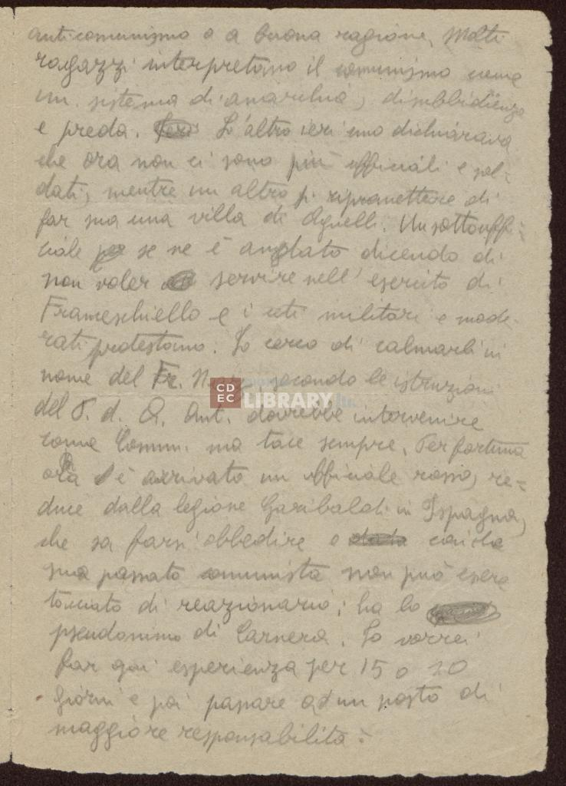
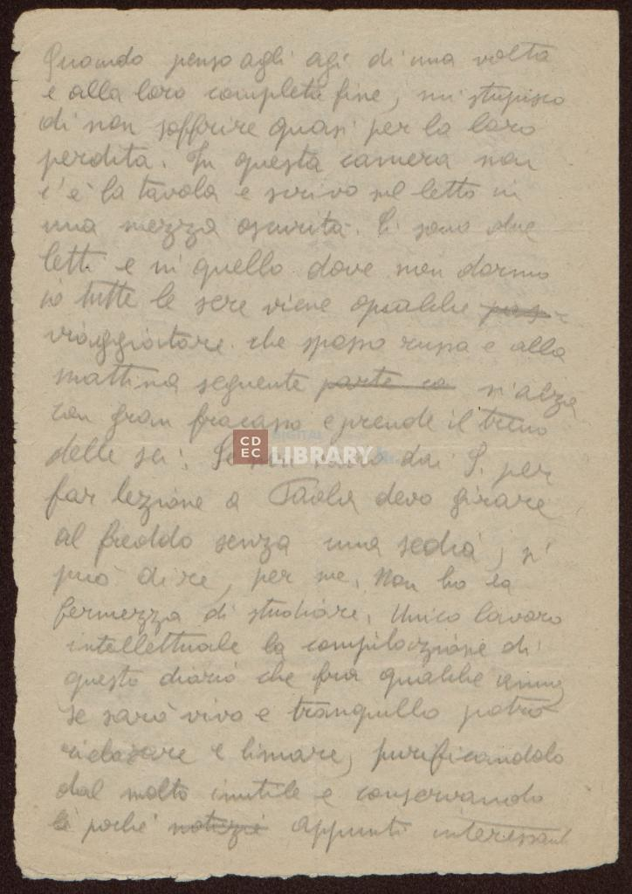
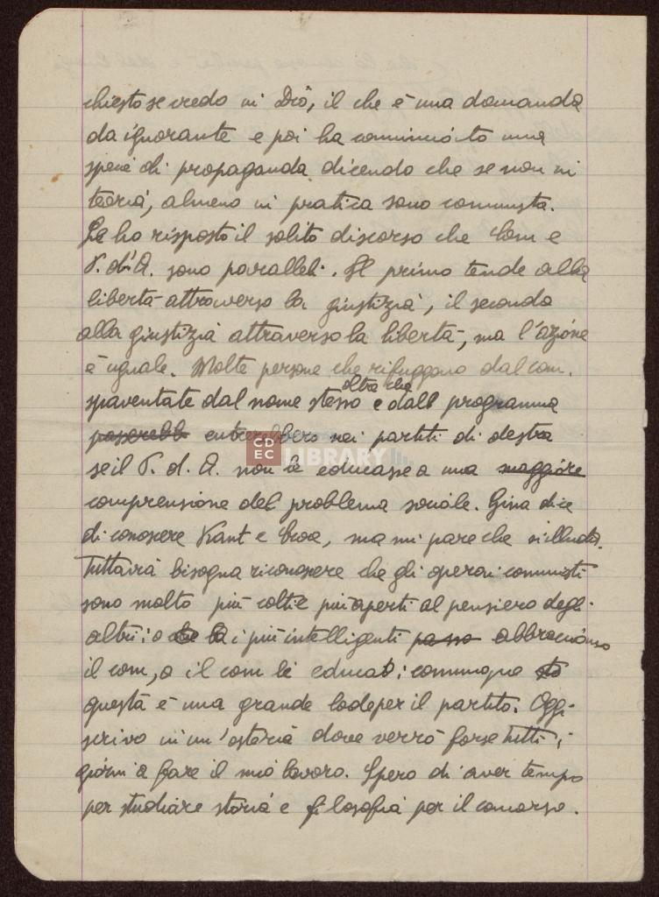

Alcune informazioni sul progetto
I diari sono stati scritti da Emanuele Artom tra il 1943 e il 1944: in queste pagine Artom racconta la sua esperienza partigiana dopo la firma dell'armistizio. La madre di Emanuele Artom, ovvero la signora Amalia Segre, ha conservato i diari e ha chiesto che alla sua morte venissero consegnati al Centro di Documentazione Ebraica.
Edizione digitale realizzata nel mese di gennaio 2024
Codifica in TEI P5 eseguita da Daniele Melaccio
Con la supervisione di Angelo Mario Del Grosso
Università di Pisa
Lungarno Pacinotti, 43
56126
Pisa
Testo con libero accesso - 2024
Scelte di codifica
- Le correzioni degli errori grammaticali sono state eseguite secondo i principi e le regole della grammatica della lingua italiana.
- Gli accorgimenti di normalizzazione sul testo originale sono stati applicati nel modificare "Ispagna" in "Spagna", nell'aggiungere un punto a fine pagina 15, nel modificare un carattere ":" in ";" e infine nel sostituire i caratteri utilizzati per la sillabazione prima del ritorno a capo.
- I segni di punteggiatura sono stati mantenuti come nell'originale.
- La sillabazione delle parole per il ritorno a capo è stata mantenuta come presente nell'originale, ma è stato normalizzato l'utilizzo del carattere "-" al posto di "=" per segnalare le parole spezzate; inoltre per ogni riga è indicato se inizia con una parola intera o con una parola spezzata dalla riga precedente.
- L'autore fa utilizzo di sigle e abbreviazioni che sono state sciolte e interpretate in fase di trascrizione, affiancando la versione originale alla versione estesa.
- Le pagine codificate sono raccolte all'interno di un tag "div" e le singole pagine corrispondono a una milestone che contiene un tag "ab", all'interno del quale il testo è diviso per righe con il tag "lb" e per periodi con il tag "s".
Descrizione del manoscritto
Documento cartaceo conservato a Milano presso la Fondazione Centro di Documentazione Ebraica Contemporanea CDEC Onlus.
Fondo Emanuele Artom - b. 1 , fasc. 9
Il manoscritto è stato realizzato su fogli di carta bianca o a righe orizzontali e verticali, talvolta con bordatura laterale, con superficie talvolta liscia e talvolta ruvida e di diverso spessore, liberamente ordinati.
Il testo è composto da 174 pagine, che comprendono nel dettaglio 1 pagina introduttiva che descrive la pagina successiva, seguita da 1 pagina contenente una lettera della signora Amalia Segre Artom (madre di Emanuele Artom), e infine 172 pagine di diario scritte da Emanuele Artom.
Sulle pagine non è riportata alcuna numerazione.
Le pagine del diario non sono rilegate tra loro, e i singoli fogli sembrano provenire da fonti diverse per qualità della carta, spessore e tipologia di superficie. L'autore ha utilizzato in maniera alternata una penna a inchiostro nero e una matita a grafite. Le pagine sono scritte da sinistra verso destra e dall'alto verso il basso.
Le pagine sono in buone condizioni di conservazione e sono facilmente leggibili; alcuni fogli presentano strappi e buchi lungo i bordi e alcune macchie di sporco.
Le pagine sono scritte in un'unica colonna di testo che tende a occupare tutto lo spazio a disposizione; le righe di testo scritte vanno all'incirca da un minimo di 10 a un massimo di 30 per pagina.
La seconda pagina della raccolta è stata scritta a mano in corsivo da Amalia Segre Artom, mentre tutte le pagine di diario sono state scritte a mano in corsivo da Emanuele Artom.
La signora Amalia, madre di Emanuele, nella sua lettera inclusa all'inizio del manoscritto dichiara la sua volontà che le pagine del diario, alla sua morte, siano consegnate al Centro di Documentazione Ebraica; nella stessa lettera spiega il contenuto del plico in cui sono conservate le pagine di diario, a cui sono state aggiunte alcune scansioni e riproduzioni per garantire la sopravvivenza di alcune pagine che stavano riportando segni di sciupatura.
Pagine codificate
Pagina 14
Clicca sui pulsanti per visualizzare
Muovi il cursore sull'immagine per evidenziare la riga corrispondente nella trascrizione.
anticomunismo o a buona ragione. Molti
ragazzi interpretano il comunismo come
un sistema di anarchia, disubbidienza
e preda. IeriL'altro ieri uno dichiarava
che ora non ci sono più ufficiali e sol-
dati, mentre un altro si riprometteva di
far sua una villa di Agnelli. Un sottouffi=-
ciale per se ne è andato dicendo di
non voler servire nell'esercito di
Franceschiello e i ceti militari e mode-
rati protestano. Io cerco di calmarli in
nome del Fr. Naz. secondo le istruzioni
del P.d.A.. Ant. dovrebbe intervenire
come Comm. ma tace sempre. Per fortuna
ora è arrivato un ufficiale rosso, re=-
duce dalla legioneBrigata Garibaldi in IspagnaSpagna,
che sa farsi obbedire e data con ila
suao passato comunista non può essere
tacciato di reazionario: ha lo
pseudonimo di Carnera. Io vorrei
far qui esperienza per 15 o 20
giorni e poi passare ad un posto di
maggiore responsabilità.
Pagina 15
Clicca sui pulsanti per visualizzare
Muovi il cursore sull'immagine per evidenziare la riga corrispondente nella trascrizione.
Quando penso agli agi di una volta
e alla loro completa fine, mi stupisco
di non soffrire quasi per la loro
perdita. In questa camera non
c'è la tavola e scrivo sul letto in
una mezza oscurità. Ci sono due
letti e in quello dove non dormo
io tutte le sere viene qualche pas
viaggiatore che spesso russa e alla
mattina seguente parte co si alza
con gran fracasso e prende il treno
delle sei. Se non vado dai S. per
far lezione a Paola devo girare
al freddo senza una sedia, si
può dire, per me. Non ho la
fermezza di studiare. Unico lavoro
intellettuale la compilazione di
questo diario che fra qualche anno,
se sarò vivo e tranquillo potrò
rielararerielaborare e limare, purificandolo
dal molto inutile e conservando
lei pochei notizie appunti interessanti.
Pagina 19
Clicca sui pulsanti per visualizzare
Muovi il cursore sull'immagine per evidenziare la riga corrispondente nella trascrizione.
chiesto se credo in Dio, il che è una domanda
da ignorante e poi ha cominciato una
specie di propaganda dicendo che se non in
teoria, almeno in pratica sono comunista.
Le ho risposto il solito dicorso che Com e
P. d'A. sono paralleli. Il primo tende alla
libertà attraverso la giustizia, il secondo
alla giustizia attraverso la libertà, ma l'azione
è uguale. Molte persone che rifuggono dal com.
spaventate dal nome stesso oltre che e dall programma
passerebb entrerebbero nei partiti di destra
se il P.d.A. non le educasse a una maggiore
comprensione del problema sociale. Gina dice
di conoscere Kant e Croce, ma mi pare che si illuda.
Tuttavia bisogna riconoscere che gli operai comunisti
sono molto più colti e più aperti al pensiero degli
altri: o che la i più intelligenti passo abbracciano
il com, o il com lei educa:; comunque sto
questa è una grande lode per il partito. Oggi
scrivo in un'osteria dove verrò forse tutti i
giorni a fare il mio lavoro. Spero di aver tempo
per studiare storia e filosofia per il concorso.
Organizzazioni citate nel testo
Fronte Nazionale
Non è chiaro a cosa si riferisca Artom con questo nome, citato più volte nel corso delle sue pagine di diario. Potrebbe intendere forse il Comitato di Liberazione Nazionale (CLN), che fu un'organizzazione politica e militare italiana costituita dai principali partiti e movimenti antifascisti del Paese, formatasi a Roma il 9 settembre 1943, allo scopo di opporsi all'occupazione tedesca e al nazifascismo in Italia; si sciolse nel 1947. L'organizzazione operò come organismo clandestino durante la Resistenza ed ebbe per delega poteri di governo nei giorni di insurrezione nazionale.
Partito d'Azione
Il Partito d'Azione (PdA) è stato un partito politico italiano di centro-sinistra fondato nel 1942; trasse il nome dall'omonimo partito fondato da Mazzini nel 1853 e scioltosi nel 1867, che aveva avuto tra i suoi obiettivi le elezioni a suffragio universale, la libertà di stampa e di pensiero, la responsabilizzazione dei governi nei confronti del popolo. Venne ricostituito il 4 giugno 1942 nell'abitazione romana di Federico Comandini. Ebbe vita breve e si sciolse nel 1947. I suoi membri furono chiamati "azionisti" e il suo organo ufficiale era L'Italia libera.
Brigata Garibaldi
Il Battaglione Garibaldi fu una formazione militare, costituita da volontari italiani nel 1936, per combattere le forze nazionaliste comandate dal generale Francisco Franco nella guerra civile spagnola, a supporto dell'Ejército Popular de la República della Repubblica Spagnola. Il 30 aprile 1937, fu elevato a rango di Brigata.
Persone citate nel testo
Emanuele Artom
È stato un partigiano e storico italiano di origine ebraica, combattente della Resistenza.
Amalia Segre Artom
È stata un'insegnante, madre di Emanuele Artom, ha raccolto e custodito i diari codificati in questo file.
Agnelli
Il cognome viene citato nel diario in riferimento a una villa della ricca famiglia fondatrice della fabbrica di automobili torinese FIAT.
Francesco d'Assisi Maria Leopoldo
Francesco II delle Due Sicilie, soprannominato Franceschiello, fu l'ultimo re del Regno delle Due Sicilie.
Antonio Giolitti
È stato un politico e partigiano italiano; fu uno dei fondatori delle Brigate Garibaldi, che diedero un contributo fondamentale alla Liberazione e alla lotta antinazista e antifascista in Italia e, in particolare, in Piemonte.
Carnera
Non è possibile rintracciare una identità certa di questo personaggio che Artom cita più volte nel corso dei suoi diari; stando alle parole dell'autore questo Carnera aveva combattuto nella Brigata Garibaldi in Spagna ed era di umili origini (prima, stando alle parole di Artom, faceva il calzolaio).
Paola Segre
Gina
Immanuel Kant
È stato un filosofo tedesco; considerato una delle figure più importanti dell'intera storia della filosofia, fu il più significativo esponente dell'Illuminismo tedesco, anticipatore degli elementi basilari della filosofia idealistica.
Benedetto Croce
È stato un filosofo, storico, politico, critico letterario e scrittore italiano, principale ideologo del liberalismo novecentesco italiano ed esponente del neoidealismo.